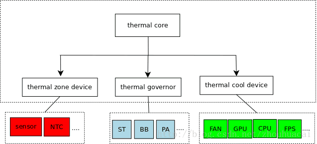

Thermal Zone
温控管理框架
温控参考文档
Thermal原理
thermal子系统是内核提供的温控管理框架，一套软件温度解决方案，配合ic内部温度传感器，对ic温度进行管控，保证系统稳定性。thermal系统多用于对ic内部的重点发热模块的功能管控，如cpu、gpu。thermal sensor(ts)驱动负责读取硬件温度sensor的温度，并传给thermal 子系统，thermal子系统将根据调控对象的温度，决定是否触发对应的冷却措施，如限制CPU最大工作频率，以及CPU打开的核数等，从而实现对系统的冷却。
Thermal zone代表一个温控管理区间，可以将其看做一个虚拟意义上的温度Sensor， 需要有对应的物理Sensor与其关联再能发挥作用。一个Thermal Zone最多可以关联一个Sensor，但该Sensor可以是多个硬件Sensor的混合。
Trip Point即触发点，由Thermal Zone维护。每个thermal zone可以维护多个trip point。Trip Point包含以下信息：
temp：触发温度，当温度到达触发温度则该trip point被触发。
type：trip point类型，沿袭PC散热方式，分为四种类型—passive、active、hot、critical。
cooling device绑定信息：记录在thermal_instance结构体中，描述trip point与cooling device的绑定关系，即当trip point触发后由那个cooling device去实施冷却措施。每个trip point必须与一个cooling device绑定，才有实际意义。
cooling device是实际对系统实施冷却措施的驱动，温控的执行者。cooling device 维护一个cooling等级，即state，一般state越高即系统的冷却需求越高。cooling device根据不同等级的冷却需求进行冷却行为。cooling device只根据state进行冷却操作，是实施者，而state的计算由thermal governor完成。

获取温度的设备：在 Thermal 框架中被抽象为 Thermal Zone Device;
控制温度的设备：在 Thermal 框架中被抽象为 Thermal Cooling Device;
控制温度策略：在 Thermal 框架中被抽象为 Thermal Governor;
Thermal Cooling Devices
参考文档：Linux Thermal 框架解析
Thermal Cooling Device 是可以降温设备的抽象，能降温的设备比如风扇，这些好理解，但是想 CPU,GPU 这些 Cooling devices 怎么理解呢？
其实降温可以从两方面来理解，一个是加快散热，另外一个就是降低产热量。风扇，散热片这些是用来加快散热，CPU,GPU 这些 Cooling devices 是通过降低产热来降温：
Thermal Cooling device 抽象的方式是，认为所有的能降温的设备有很多可以单独控制的状态。例如，风扇有不同的风速状态，
CPU/GPU Cooling device 有不同最大运行频率状态，这样当温度高了之后通过调整这些状态来降低温度；
文件系统查看
/proc/device-tree/thermal-zones
.
|-- cpu-thermal
| |-- coefficients
| |-- cooling-maps
| | `-- name
| |-- name
| |-- phandle
| |-- polling-delay
| |-- polling-delay-passive
| `-- thermal-sensors
`-- name
2 directories, 8 files
DTS Thermal Zone
linux-rpi-5.4.y/arch/arm/boot/dts/bcm283x.dtsi
thermal-zones声明所有的thermal策略
thermal-zones {
cpu_thermal: cpu-thermal {
polling-delay-passive = <0>;
polling-delay = <1000>;
trips {
cpu-crit {
temperature = <90000>;
hysteresis = <0>;
type = "critical";
};
};
cooling-maps {
};
};
};
linux-rpi-5.4.y/arch/arm/boot/dts/bcm2711.dtsi
采用
brcm,bcm2711-thermal驱动，采用#thermal-sensor-cells = <0>中指定的thermal zones(其声明了所有的thermal)第0个thermal策略;
/ {
compatible = "brcm,bcm2711";
#address-cells = <2>;
#size-cells = <1>;
interrupt-parent = <&gicv2>;
soc {
// ...省略
avs_monitor: avs-monitor@7d5d2000 {
compatible = "brcm,bcm2711-avs-monitor",
"syscon", "simple-mfd";
reg = <0x7d5d2000 0xf00>;
thermal: thermal {
compatible = "brcm,bcm2711-thermal";
#thermal-sensor-cells = <0>;
};
};
// ...省略
}
// ...省略
}
&cpu_thermal {
coefficients = <(-487) 410040>;
thermal-sensors = <&thermal>;
};
driver
brcm,bcm2711-thermal驱动probe，其通过#thermal-sensor-cells指定thermal zones中的索引策略，目前是0bcm2711_thermal驱动可以认为是传感器驱动，最终会挂在到
drivers/thermal/thermal_core.c生成的thermal zone框架设备上，相当于绑定的动作
* drivers/thermal/broadcom/bcm2711_thermal.c
* module_platform_driver(bcm2711_thermal_driver);
* static struct platform_driver bcm2711_thermal_driver
* .driver
* .of_match_table = bcm2711_thermal_id_table,
* static const struct of_device_id bcm2711_thermal_id_table[]
* { .compatible = "brcm,bcm2711-thermal" },
* .probe = bcm2711_thermal_probe,
* static int bcm2711_thermal_probe(struct platform_device *pdev)
* thermal = devm_thermal_zone_of_sensor_register(dev, 0, priv, &bcm2711_thermal_of_ops);
* bcm2711_thermal_of_ops
* static const struct thermal_zone_of_device_ops bcm2711_thermal_of_ops
* .get_temp = bcm2711_get_temp,
* static int bcm2711_get_temp(void *data, int *temp)
* int slope = thermal_zone_get_slope(priv->thermal);
* int offset = thermal_zone_get_offset(priv->thermal);
* ret = regmap_read(priv->regmap, AVS_RO_TEMP_STATUS, &val);
* t = slope * val + offset;
* *temp = t < 0 ? 0 : t;
* devm_thermal_zone_of_sensor_register(...);
* drivers/thermal/of-thermal.c
* struct thermal_zone_device *devm_thermal_zone_of_sensor_register(struct device *dev, int sensor_id, void *data, const struct thermal_zone_of_device_ops *ops)
* ptr = devres_alloc(devm_thermal_zone_of_sensor_release, sizeof(*ptr), GFP_KERNEL);
* tzd = thermal_zone_of_sensor_register(dev, sensor_id, data, ops);
* np = of_find_node_by_name(NULL, "thermal-zones");
* 这是隐藏数据
* sensor_np = of_node_get(dev->of_node);
* for_each_available_child_of_node(np, child)
* ret = of_parse_phandle_with_args(child, "thermal-sensors", "#thermal-sensor-cells", 0, &sensor_specs);
* if (sensor_specs.np == sensor_np && id == sensor_id)
* tzd = thermal_zone_of_add_sensor(child, sensor_np, data, ops);
* drivers/thermal/of-thermal.c
* static struct thermal_zone_device *thermal_zone_of_add_sensor(struct device_node *zone, struct device_node *sensor, void *data, const struct thermal_zone_of_device_ops *ops)
* tzd = thermal_zone_get_zone_by_name(zone->name);
* drivers/thermal/thermal_core.c
* list_for_each_entry(pos, &thermal_tz_list, node)
* if (!strncasecmp(name, pos->type, THERMAL_NAME_LENGTH))
* found++;
* ref = pos;